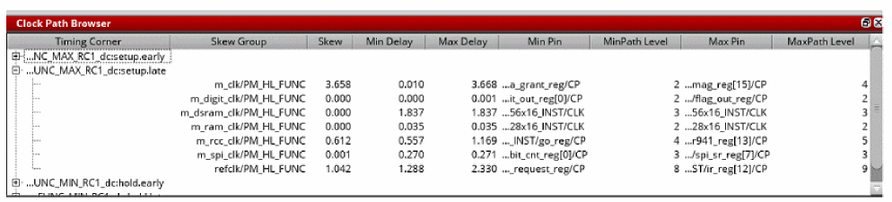

Clock Path Browser
The Clock Path Browser window consists of the following:
Choose - View - Clock path browser. By default, the browser is attached at the bottom of the CTD window. You can choose to display the browser above, below, to the right or left of the main display area of the Clock Tree Debugger window.
When you open the CTD main window, the browser does not open by default.
To view the browser in the Clock Tree Debugger main window, select Enable clock browser in the View menu. You can choose to view first, second, or third level of min/max paths for skew groups. For details of above options, see the Clock Tree Debugger - View section. You can also update these settings for the Clock Path Browser in the Set Preferences form. For details, see "Set Preferences for CTD GUI Configuration".
To close the browser, click the X at the top-right corner of the browser window.

The Browser shows a table of path pairs with one row per minimum (min) or maximum (max) path in a particular skew group for a particular analysis view. Each row provides the following information in the various columns listed below:
Cells in the table that correspond to objects such as the skew group, analysis view, and min or max pins have the context menu applicable to that object, allowing the full set of operations such as coloring by a skew group in the clock tree view.
Return to top